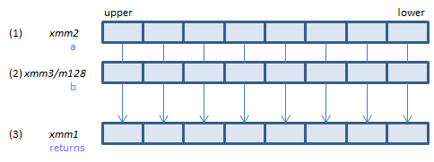
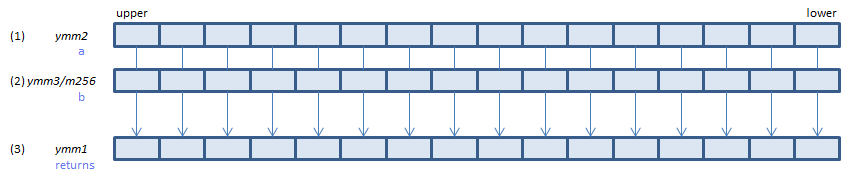
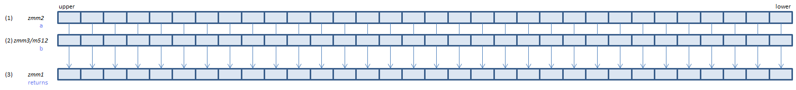

VPSRLVW - Packed Shift Right Logical Variable Word
VPSRLVW xmm1{k1}{z}, xmm2, xmm3/m128 (V5+BW+VL
__m128i _mm_srlv_epi16(__m128i a, __m128i b)
__m128i _mm_mask_srlv_epi16(__m128i s, __mmask8 k, __m128i a, __m128i b)
__m128i _mm_maskz_srlv_epi16(__mmask8 k, __m128i a, __m128i b)

For each WORD, set (1) >> (2) to (3). Emptied upper bits are zeroed.
VPSRLVW ymm1{k1}{z}, ymm2, ymm3/m256 (V5+BW+VL
__m256i _mm256_srlv_epi16(__m256i a, __m256i b)
__m256i _mm256_mask_srlv_epi16(__m256i s, __mmask16 k, __m256i a, __m256i b)
__m256i _mm256_maskz_srlv_epi16(__mmask16 k, __m256i a, __m256i b)

For each WORD, set (1) >> (2) to (3). Emptied upper bits are zeroed.
VPSRLVW zmm1{k1}{z}, zmm2, zmm3/m512 (V5+BW
__m512i _mm512_srlv_epi16(__m512i a, __m512i b)
__m512i _mm512_mask_srlv_epi16(__m512i s, __mmask32 k, __m512i a, __m512i b)
__m512i _mm512_maskz_srlv_epi16(__mmask32 k, __m512i a, __m512i b)

For each WORD, set (1) >> (2) to (3). Emptied upper bits are zeroed.
x86/x64 SIMD Instruction List
Feedback